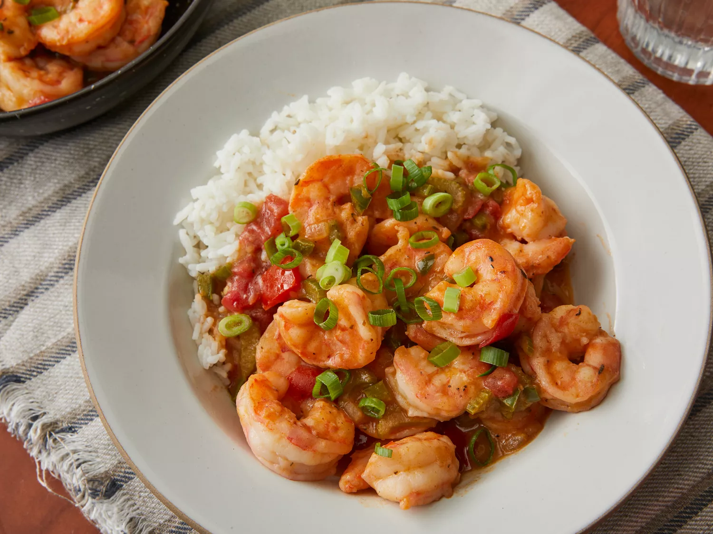

Chef John's Shrimp Étouffée

Description
Étouffée is a dish consisting of shellfish cooked in a rich sauce served over rice. The secret to authentic étouffée is a cooking technique called "smothering," a Cajun and Creole cooking technique that is similar to braising. In French, "étouffée" means "smothered."
Ingredients
Steps
- For the spice blend: Whisk paprika, thyme, oregano, cayenne, garlic powder, onion powder, white pepper, and black pepper together in a small bowl.
- For the étouffée: Drain shrimp in a colander for at least 15 minutes. Transfer to a bowl lined with paper towels and dry shrimp for about 3 minutes. Remove paper towels from the bowl. Season shrimp with salt and 1 teaspoon spice blend; toss to coat.
- Heat oil in a large heavy skillet over high heat until oil is smoking. Cook shrimp in hot oil without stirring for 1 minute; stir, and cook 1 minute more.